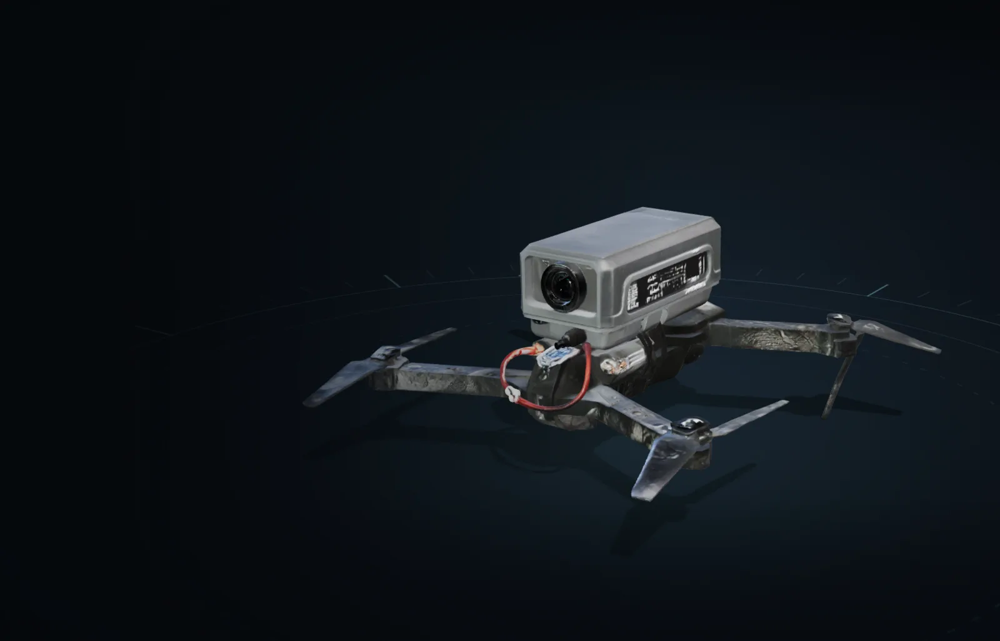
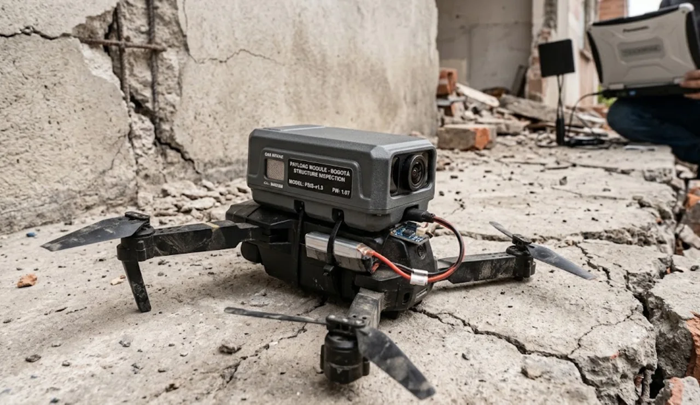
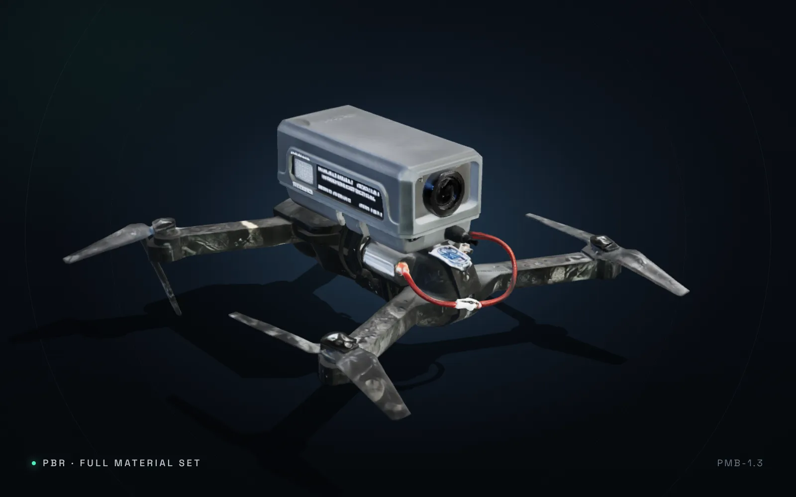
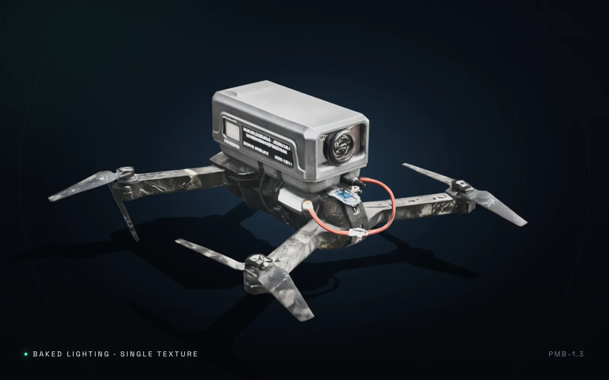

Dual-sensor head
A 48 MP 1/1.3″ visual sensor and a 640 × 512 radiometric thermal core on a common optical bench, so every pixel of thermal data has a visual twin.

PMB-1.3 · Structural inspection payload
A 1.3 kg dual-sensor payload that turns an inspection-class quadcopter into a structural survey instrument — radiometric thermal, 48 MP visual and millimetre crack grading, even in GPS-denied interiors.
Drag to orbit · Scroll to zoom · F focus · M material
3D preview unavailable. Your browser could not start WebGL — the rendered image is shown instead.

Field prototype · PMB-1.3Field notes · Bogotá
After an earthquake the question is not whether a building is damaged. It is which rooms are still safe to enter. PMB-1.3 was designed around that question: small enough to fly through a doorway, stable enough to hover 1.5 m from a cracked column, and precise enough to grade what it sees.
Every frame is scaled against a calibrated reference, resolving 0.3 mm cracks at a 2 m standoff.
Radiometric frames are aligned with the visual stream to reveal delamination, moisture ingress and hidden voids.
Visual–inertial and LiDAR fusion holds position inside concrete shells, basements and stairwells.
The module
The payload is a sealed aluminium monocoque with a quick-release rail, a stabilised dual-sensor head and a single cable run to the airframe. Swap it between aircraft in under a minute; the calibration travels with the module.
A 48 MP 1/1.3″ visual sensor and a 640 × 512 radiometric thermal core on a common optical bench, so every pixel of thermal data has a visual twin.
40 TOPS of local inference grades cracks, flags spalling and writes a georeferenced frame index in flight. Nothing critical depends on the downlink.
A three-axis head holds ±0.01° against gusts, letting the aircraft translate along a wall while the sensor keeps a steady, motion-blur-free look.
Reference design
Figures describe the reference airframe and payload combination modelled on this page. Flight numbers are hover values at sea level with a full sensor load.
Reference figures for the concept design shown in the 3D model. Not a flight manual.
Open assets
The same geometry you are orbiting above, published as glTF 2.0 binaries. The web build is meshopt-compressed with WebP textures; the untouched exports stay in the repository.

Default viewBase colour, metallic–roughness and normal maps. Reacts to the scene environment and lights.

Baked / shadedLighting baked into one emissive texture. Ideal for lightweight viewers or low-power devices.
The web builds use EXT_meshopt_compression, KHR_mesh_quantization
and WebP textures. Register the meshopt decoder before loading:
// three.js r186
import { GLTFLoader } from 'three/addons/loaders/GLTFLoader.js';
import { MeshoptDecoder } from 'three/addons/libs/meshopt_decoder.module.js';
const loader = new GLTFLoader().setMeshoptDecoder(MeshoptDecoder);
const { scene } = await loader.loadAsync('assets/models/drone-pbr.glb');